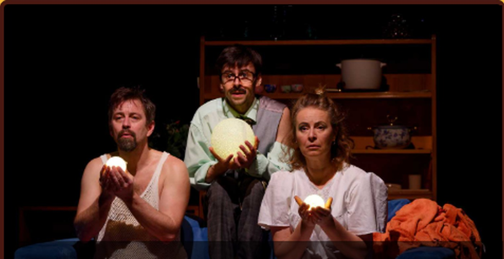
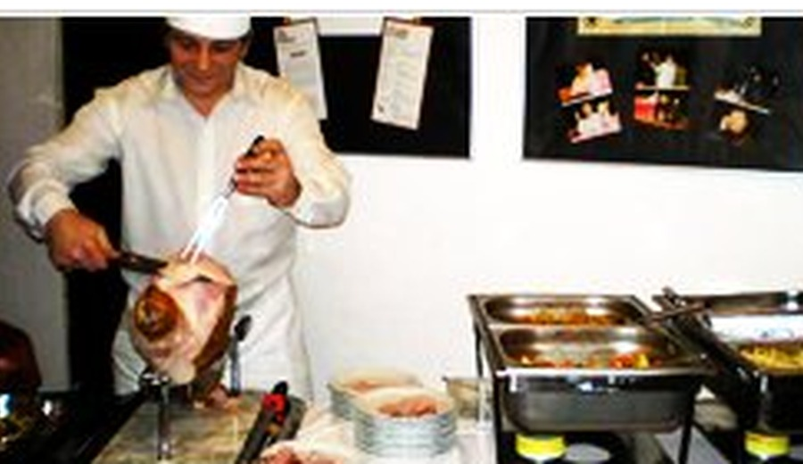

Detektor lži
Divadlo U Hasičů

Divadlo U Hasičů
Nejbližší představení v Divadle U Hasičů.
Komedie, hostující soubory, stand-up i dětské pořady.
V repertoáru Divadla U Hasičů jsou také pohádky a rodinná představení. Na webu divadla najdete například tituly Čert a Káča, Ferda Mravenec, Kocour Modroočko, Princezna na hrášku nebo Příhody včelích medvídků.
Program pro dětiRezervace a nákup vstupenek online i přímo v divadle.
Vstupenky můžete rezervovat i zakoupit online. Systém umožňuje výběr místa v hledišti a online platbu kartou nebo převodem.
Koupit onlinePokladna je otevřena v pracovní dny od 12:00 do 19:00. Mimo pokladní hodiny je možné koupit vstupenky jednu hodinu před představením.
222 518 716Hromadnou objednávku minimálně 10 vstupenek lze vyřídit e-mailem. Vstupenky mohou být připravené na pokladně.
info@divadlouhasicu.netDivadlo lze pronajmout včetně služeb a techniky pro divadelní soubory, firemní večery, představení, rauty a další společenské akce.

Divadelní kavárna je otevřena 1,5 hodiny před začátkem představení.
Sál je klimatizovaný a má bezbariérový přístup.
Facebook